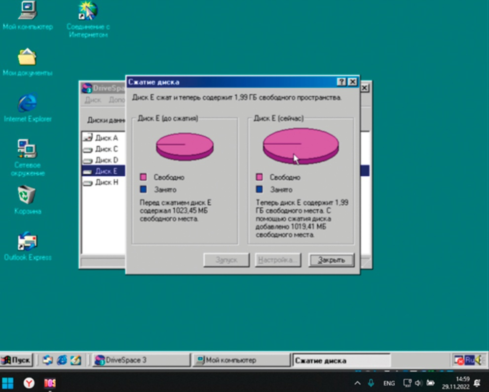

DriveSpace
Если Stacker в чем-то и превосходит DriveSpace, то лишь в качестве документации. В руководстве по Windows 95 всего пять страниц посвящены этой утилите, но наиболее подробно DriveSpace документирована в Help-файле вспомогательного модуля. Однако даже там описано не все аспекты. Например, отсутствует раздел, в котором объяснялось бы, как разрешать проблемы, периодически возникающие со сжатыми дисками. Чем выше коэффициент сжатия диска, тем более сложная обработка требуется для поддержания уровня сжатия. В зависимости от потребности в объеме памяти и скорости компьютера можно выбрать малый коэффициент сжатия и высокое быстродействие - либо, наоборот, выбрать большой коэффициент сжатия в ущерб быстродействию. DriveSpace 3, как и Stacker, предусматривает настраиваемый коэффициент сжатия, и имеется возможность подобрать его значение в соответствии с определенными нуждами. Имеются три уровня сжатия: Standard (стандартный), HiPack (плотной упаковки) и UltraPack (сверхплотной упаковки). Динамическое сжатие файлов осуществляется с помощью методов Standard или HiPack, на выбор. UltraPack, требующий больше времени для упаковки и восстановления данных, оказывается полезен для редко используемых файлов. Однако он не может работать в оперативном режиме без прерывания основной работы. Единственный способ воспользоваться методом сжатия UltraPack - запустить агент сжатия (Compression Agent) утилиты DriveSpace 3, который восстанавливает файлы, когда компьютер не используется. Для загрузки, удаления и настройки версий 2 и 3 утилиты DriveSpace предусмотрен специальный графический модуль (средства DOS-режима не используются).
